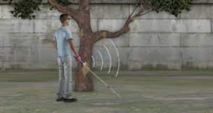
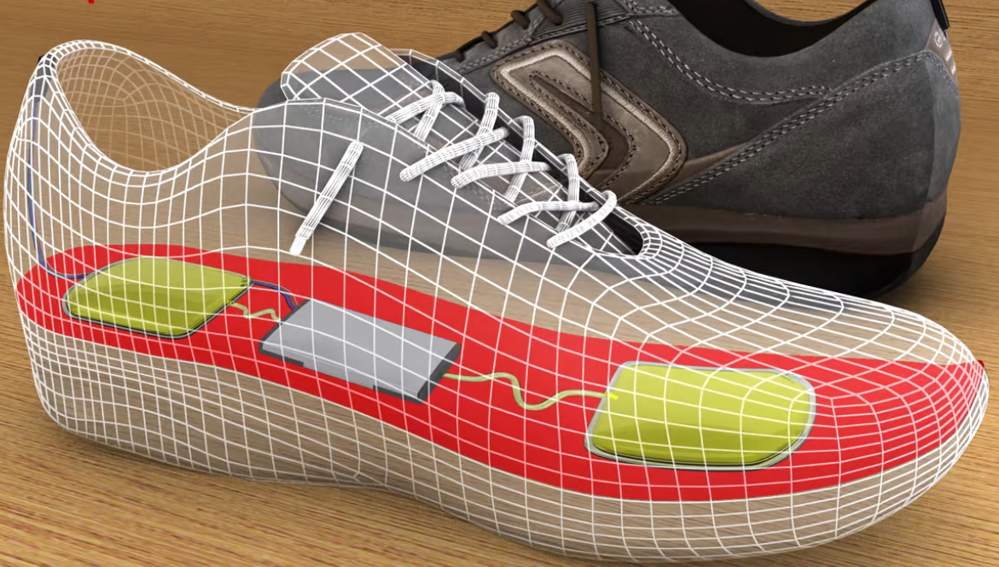
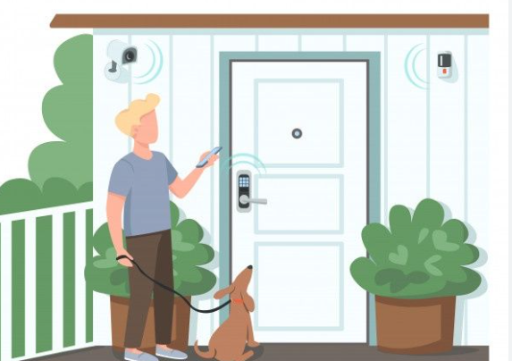
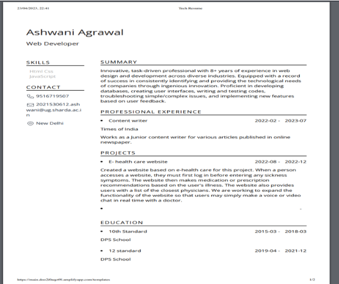

Hello, I am Ram Ashish Kumar from Bihar. I have completed my high school degree in Bihar. Subsequently, I moved to another district in Bihar to pursue my Intermediate degree. During the Intermediate, I opted for the Science stream with Mathematics and focused on both Board and JEE levels. In my first attempt, I scored an 85th percentile in the JEE and also excelled in the Board exams. My aspiration was to join IIT, so I went to Kota, Rajasthan, for IIT preparation. However, while studying in Kota, the COVID-19 pandemic struck, leading to a lockdown. Consequently, I decided to return home, and in that situation, I couldn't crack the IIT exam. I then secured admission to Sharda University for my undergraduate degree. In my undergraduate studies, I chose B.Tech in Computer Science to pursue a better lifestyle and explore opportunities in the high-paying job market. I am focusing on development skills beyond the regular college syllabus.I have completed numerous projects in MERN stack development and continue to work on additional ones.
Skills
Smart Cane for Blind People IOT
The visually-impaired people tend to have a problem where they cannot navigate freely in an environment either known or unknown to them. The existing of Smart Cane should aim to help each visually-impaired people to navigate through their daily motion. The use of Smart Cane should be optimized for usable and affordable enough that can be easily use by all the visually- impaired. However, the current problem that we face today is that the visually-impaired people tend to have a problem where they cannot navigate freely in an environment either known or unknown to them. Hence, the visually-impaired people will not have confidence and also lost their physical integrity in themselves. We also can see that because the visually-impaired people cannot navigate properly, they need to adapt to the walking cane that they are using instead of the walking cane itself needs to adapt with them. Thus, using the Smart Cane which will navigate the users more accurately with the use of ultrasonic sensor and vibration motor attached to the model can eliminate the problem faced.
Smart Shoes IOT
The visually-impaired people tend to have a problem where they cannot navigate freely in an environment either known or unknown to them. The existing of Smart Cane should aim to help each visually-impaired people to navigate through their daily motion. The use of Smart Cane should be optimized for usable and affordable enough that can be easily use by all the visually- impaired. However, the current problem that we face today is that the visually-impaired people tend to have a problem where they cannot navigate freely in an environment either known or unknown to them. Hence, the visually-impaired people will not have confidence and also lost their physical integrity in themselves. We also can see that because the visually-impaired people cannot navigate properly, they need to adapt to the walking cane that they are using instead of the walking cane itself needs to adapt with them. Thus, using the Smart Cane which will navigate the users more accurately with the use of ultrasonic sensor and vibration motor attached to the model can eliminate the problem faced.
[Sentical]Smart Security Device IOT
This project is all about keeping homes and vehicles safe, like cars, motorcycles, and bicycles. Vehicle theft is a big problem worldwide, and it's still happening a lot. Thieves are getting smarter and finding new ways to steal vehicles, despite efforts from police and car makers. I'm trying to help with this issue using what I know. Thieves are always finding ways to beat security systems, like stealing keys or breaking into cars. My aim is to make it harder for them to steal vehicles, making life safer for vehicle owners and manufacturers.
Dynamically Resume Builder websites
In the very competitive job market of today, it is crucial for job seekers to have a CV that stands out from the competition. But many people find it difficult to write a polished résumé that effectively communicates their abilities and expertise. This issue can be resolved by giving people a user-friendly platform to swiftly and easily construct and customize their resumes on a resume-building website. The website can include a variety of samples, instructions, and advice to assist users in creating their resumes, making it simpler for them to highlight their individual skills and abilities. This website also makes a job recommendation to candidates based on their skills and experience. Furthermore, it offers the necessary link so that candidates can quickly apply online.